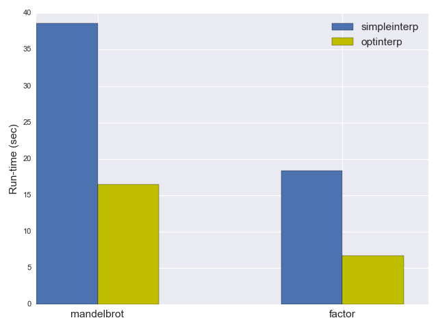
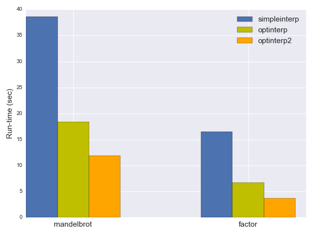
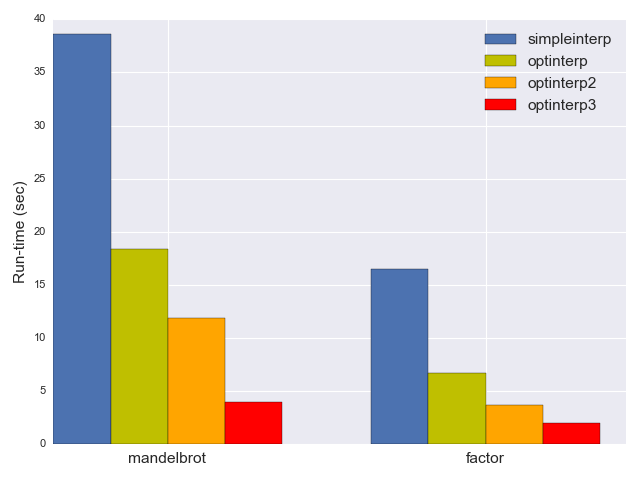

This is the first post in a series about JIT compilers. The plan is to take a simple input language and develop some interpreters and JITs for it, in roughtly increasing degree of complexity. It's my hope that by the end of the series readers will have a good understanding of what it takes to develop a JIT compiler and what are some of the tools available to assist with the task.
The input language will be Brainfuck, or BF as I'll be referring to it from now and throughout the series. I think it's a good language for the purpose since it really boils programmability down to the essentials. Even though it's very tedious to program in, BF is fairly "mainstream" as far as programming languages go, with some concepts like memory pointers and loops mapping directly to familiar C constructs.
As the implementation language I'll be using C++. This is, perhaps, not the most commonly used "starter" language; that said, most compilers I know are written in C++ (or C), and hence many of the most popular low-level code-generation libraries in existence are in these languages. In later parts of this series we'll be using some C++ libraries, and this is by far easiest to do from C++ itself. Besides, I try to keep my code straightforward throughout the series - there is very little use of advanced C++ features here.
The BF language
The BF language is simple to describe, but I don't do this here. Please take a look at the spec, read the Wikipedia page, or one of the other existing resources. An in-browser interpreter such as this one can be very useful.
I'll just give an example to develop a taste for the language. The following BF program prints the numbers 1 to 5 to the screen:
++++++++ ++++++++ ++++++++ ++++++++ ++++++++ ++++++++
>+++++
[<+.>-]
Here's what it does:
- Line 1 initializes memory cell 0 to the value 48, which happens to be the ASCII code for 0.
- Line 2 initializes memory cell 1 to 5, which is our loop counter.
- Line 3 is a loop that, at each iteration, increments cell 0 and prints its value out, then decrements cell 1 and checks if it has reached the value 0.
A simple interpreter
To get an initial feel for the language and to have a reliable reference implementation, we'll start with a simple interpreter that processes one BF character at a time and does what's necessary to "execute" it.
One of the reasons for my choosing BF as the source language is its simplicity. You'll find a lot of tutorials online that purport to develop interpreters or compilers but end up focusing 90% of their time on writing the parser. I think the later stages of compilation are much more interesting, so my "parser" for BF looks like this:
struct Program {
std::string instructions;
};
Program parse_from_stream(std::istream& stream) {
Program program;
for (std::string line; std::getline(stream, line);) {
for (auto c : line) {
if (c == '>' || c == '<' || c == '+' || c == '-' || c == '.' ||
c == ',' || c == '[' || c == ']') {
program.instructions.push_back(c);
}
}
}
return program;
}
Note that this is a valid implementation according to the BF spec: all characters except the 8 supported ones are to be treated as comments and ignored [1]. This parser is going to serve us throughout the series.
With that out of the way, here's the actual interpreter:
constexpr int MEMORY_SIZE = 30000;
void simpleinterp(const Program& p, bool verbose) {
// Initialize state.
std::vector<uint8_t> memory(MEMORY_SIZE, 0);
size_t pc = 0;
size_t dataptr = 0;
while (pc < p.instructions.size()) {
char instruction = p.instructions[pc];
switch (instruction) {
case '>':
dataptr++;
break;
case '<':
dataptr--;
break;
case '+':
memory[dataptr]++;
break;
case '-':
memory[dataptr]--;
break;
case '.':
std::cout.put(memory[dataptr]);
break;
case ',':
memory[dataptr] = std::cin.get();
break;
// [...]
All these cases are rather trivial. The more interesting ones are the control flow ops - [ and ]. We'll start with [ - jump forward if the current data location is zero. This op makes it possible to skip a loop or implement a simple if-like condition.
case '[':
if (memory[dataptr] == 0) {
int bracket_nesting = 1;
size_t saved_pc = pc;
while (bracket_nesting && ++pc < p.instructions.size()) {
if (p.instructions[pc] == ']') {
bracket_nesting--;
} else if (p.instructions[pc] == '[') {
bracket_nesting++;
}
}
if (!bracket_nesting) {
break;
} else {
DIE << "unmatched '[' at pc=" << saved_pc;
}
}
break;
The most important thing to note here is that the [ and ] brackets in BF can be nested; therefore, when figuring out where to jump, we have to find the matching bracket. If this seems like something wasteful to do at run-time, you're right - keep reading!
For ] we do something very similar. In BF, ] is jumping to an earlier [ if the current data location is not zero. This is how loops advance to the next iteration (or stop).
case ']':
if (memory[dataptr] != 0) {
int bracket_nesting = 1;
size_t saved_pc = pc;
while (bracket_nesting && pc > 0) {
pc--;
if (p.instructions[pc] == '[') {
bracket_nesting--;
} else if (p.instructions[pc] == ']') {
bracket_nesting++;
}
}
if (!bracket_nesting) {
break;
} else {
DIE << "unmatched ']' at pc=" << saved_pc;
}
}
break;
And that's it! The interpreter loop concludes with:
default: { DIE << "bad char '" << instruction << "' at pc=" << pc; }
}
pc++;
}
The full code for this simple interpreter can be found in simpleinterp.cpp.
Measuring the performance of BF programs
Whenever we develop something like an interpreter or compiler, execution speed is a paramount concern. Therefore, it's common for compiler writers to have benchmark suites they refer to for measurements. For BF, I'll be using a couple of programs throughout the series to measure how fast our implementation is. One is a Mandelbrot generator; another is a factorization program invoked on the large-ish prime 179424691 [2].
The simple interpreter shown above takes 38.6 seconds on mandelbrot and 16.5 seconds on factor [3]. Now let's see how we can greatly improve these numbers.
Optimized interpreter - take 1
The most obvious optimization opportunity for the simple interpreter is to avoid laboriously looking for the matching bracket every time a [ or ] is encountered. Imagine a realistic program with a hot inner loop (by "hot" here I mean it runs many, many - possibly billions - of times throughtout the execution of the program). Is it really necessary to scan the source to find the matching bracket every single time? Of course not. We can just precompute these jump destinations ahead of time, since the BF program doesn't change throughout its execution.
This is the idea behind optinterp.cpp - our first optimized interpreter. Much of the code is the same as for the simple interpreter, so I'll just highlight the differences. A crucial addition is this function, which is run before the actual interpretation happens:
std::vector<size_t> compute_jumptable(const Program& p) {
size_t pc = 0;
size_t program_size = p.instructions.size();
std::vector<size_t> jumptable(program_size, 0);
while (pc < program_size) {
char instruction = p.instructions[pc];
if (instruction == '[') {
int bracket_nesting = 1;
size_t seek = pc;
while (bracket_nesting && ++seek < program_size) {
if (p.instructions[seek] == ']') {
bracket_nesting--;
} else if (p.instructions[seek] == '[') {
bracket_nesting++;
}
}
if (!bracket_nesting) {
jumptable[pc] = seek;
jumptable[seek] = pc;
} else {
DIE << "unmatched '[' at pc=" << pc;
}
}
pc++;
}
return jumptable;
}
It computes the jump destinations for all the [ and ] ops in the program. Its operation is essentially identical to the scanning forward / backward for a matching bracket in the main loop of the simple interpreter. The result is the vector jumptable, where for every [ and ] at offset i in the program, jumptable[i] holds the offset of the matching bracket. For any other op at offset i, jumptable[i] is simply 0.
The actual main loop of optinterp is the same as in simpleinterp, except for the clauses for brackets, which become simply:
case '[':
if (memory[dataptr] == 0) {
pc = jumptable[pc];
}
break;
case ']':
if (memory[dataptr] != 0) {
pc = jumptable[pc];
}
break;
As you'd expect, optinterp is quite a bit faster; it takes only 18.4 seconds to run mandelbrot and 6.7 seconds to run factor - more than a factor of 2 improvement!
Optimized interpreter - take 2
The optimization applied in the previous section was very beneficial, but it's also fairly trivial - we avoid completely unnecessary work at run-time, if we can just precompute it at compile time. To make our interpreter even faster, we'll have to get more creative.
The first step in optimizing anything is measuring and profiling the current code. Some past experience helps avoid needless steps in this process. For example, it's fairly clear that almost 100% of the run-time of the interpreter will be spent in the single function that interprets the program; therefore, function/call profiling won't be of much help.
The main loop is fairly small, however, and there doesn't appear to be much to optimize at first glance (disregarding micro-optimizaitons which I won't worry about here). Well, except that this loop runs for every BF instruction encountered in the source program, so it can run tons of times. So what we'll do is get a breakdown of the ops that execute during a typical program run. The code for optinterp already has this tracing included - it's protected with the BFTRACE preprocessor macro because it's costly and we want to avoid doing it in "real" runs.
Here's the execution profile we get from a typical run of the factor benchmark on the prime 179424691. On the left is the operation, and on the right the number of times it was executed by the interpreter for the program at hand:
. --> 21
, --> 10
+ --> 212,428,900
] --> 242,695,606
< --> 1,220,387,704
- --> 212,328,376
> --> 1,220,387,724
[ --> 118,341,127
.. Total: 3,226,569,468
A couple of immediate observations:
- The total number of operations is huge: over 3 billion times around the main interpreter loop. It's a good thing we're using C++ for the interpreter - running 3 billion iterations of anything in a higher level language would be painful!
- The ratio of pointer movement instructions to loops is suspiciously high. There's something like 242 million loop iterations executed (the count for ]) but a total of 2.4 billion pointer moves: < and >.
We'd expect and hope for the hot loops to be short and tight - why is every loop doing so much?
A cursory glance at the source of factor.bf provides a clue. Here's a representative snippet:
<<<<<<<<<<<<<<<<<[<<<<<<<<<<]>>>>>>>>>>
[>>>>>>>>[-]<<[->+<]<[->>>+<<<]>>>>>]<<<<<<<<<<
[+>>>>>>>[-<<<<<<<+>>>>>>>[-<<<<<<<->>>>>>+>
[-<<<<<<<+>>>>>>>[-<<<<<<<->>>>>>+>
[-<<<<<<<+>>>>>>>[-<<<<<<<->>>>>>+>
[-<<<<<<<+>>>>>>>[-<<<<<<<->>>>>>+>
[-<<<<<<<+>>>>>>>]]]]]]]]]<<<<<<<
[->>>>>>>+<<<<<<<]-<<<<<<<<<<]
>>>>>>>
[-<<<<<<<<<<<+>>>>>>>>>>>]
>>>[>>>>>>>[-<<<<<<<<<<<+++++>>>>>>>>>>>]>>>]<<<<<<<<<<
[+>>>>>>>>[-<<<<<<<<+>>>>>>>>[-<<<<<<<<->>>>>+>>>
[-<<<<<<<<+>>>>>>>>[-<<<<<<<<->>>>>+>>>
[-<<<<<<<<+>>>>>>>>[-<<<<<<<<->>>>>+>>>
[-<<<<<<<<+>>>>>>>>[-<<<<<<<<->>>>>+>>>
[-<<<<<<<<+>>>>>>>>]]]]]]]]]<<<<<<<<
[->>>>>>>>+<<<<<<<<]-<<<<<<<<<<]
>>>>>>>>[-<<<<<<<<<<<<<+>>>>>>>>>>>>>]>>
[>>>>>>>>[-<<<<<<<<<<<<<+++++>>>>>>>>>>>>>]>>]<<<<<<<<<<
[<<<<<<<<<<]>>>>>>>>>>
>>>>>>
]
<<<<<<
Note the fairly long sequences of <<<<<<<, >>>>>>>. Just a bit of thought about the semantics of BF makes this clear - these are necessary to get anything done because we want to be able to get from cell to cell to update data.
Now let's think what it means to execute a sequence such as <<<<<<< in our interpreter. Our main loop executes 7 times, each time doing:
- Advance pc and compare it to program size.
- Grab the instruction at pc.
- Switch on the value of the instruction to the right case.
- Execute the case.
That's quite expensive. What if we could compress all the long sequences of <<<<<<<? After all, what we do for a single < is:
case '<':
dataptr--;
break;
So for seven <s we could do:
case ... something representing 7 <s ...:
dataptr -= 7;
break;
This is easy to generalize. We can detect any consecutive sequence in the BF source and encode it as a pair: the operation, and the repetition count. Then at execution time we simply repeat the op the required number of times.
The full code for this interpreter is optinterp2.cpp. Previously, we kept a separate jump table correlated to the [ and ] instructions in the input program. Now we need extra information for every BF instruction, so we'll just translate the Program into a sequences of ops of the type:
enum class BfOpKind {
INVALID_OP = 0,
INC_PTR,
DEC_PTR,
INC_DATA,
DEC_DATA,
READ_STDIN,
WRITE_STDOUT,
JUMP_IF_DATA_ZERO,
JUMP_IF_DATA_NOT_ZERO
};
// Every op has a single numeric argument. For JUMP_* ops it's the offset to
// which a jump should be made; for all other ops, it's the number of times the
// op is to be repeated.
struct BfOp {
BfOp(BfOpKind kind_param, size_t argument_param)
: kind(kind_param), argument(argument_param) {}
BfOpKind kind = BfOpKind::INVALID_OP;
size_t argument = 0;
};
The interpretation happens in two steps. First we run translate_program to read the program and generate a std::vector<BfOp>. This translation is pretty straight-forward: it detects repetitions in ops like < and encodes them in the argument field. A slightly tricky aspect here is handling the jumps, since the offsets of all ops in the program change (a run of seven consecutive <s turns into a single DEC_PTR, for example). Take a look at the code for the full details.
As planned, the main interpreter loop becomes:
switch (kind) {
case BfOpKind::INC_PTR:
dataptr += op.argument;
break;
case BfOpKind::DEC_PTR:
dataptr -= op.argument;
break;
case BfOpKind::INC_DATA:
memory[dataptr] += op.argument;
break;
case BfOpKind::DEC_DATA:
memory[dataptr] -= op.argument;
break;
// [...] etc.
How fast is it? The mandelbrot benchmark now takes 11.9 seconds, and factor takes 3.7 seconds; another 40% reduction in run-time.
Optimized interpreter - take 3
Our optimized interpreter now runs the mandelbrot benchmark more than 3x faster than the original, naive interpreter. Can we do even better?
First, let's take a look at instruction tracing for optinterp2, repeating the previous experiment:
. --> 21
] --> 242,695,606
, --> 10
+ --> 191,440,613
< --> 214,595,790
- --> 205,040,514
> --> 270,123,690
[ --> 118,341,127
.. Total: 1,242,237,371
The total instruction count went down almost 3x. Also, now the number of BF loop executions is more comparable to the number of other instructions, meaning that we don't do too much work in every iteration. This was our goal with the optimization of repetitions, after all.
In fact, this execution profile is annoyingly flat. Performance gurus don't like flat profiles because there's nothing in particular sticking out that one could optimize. This usually means we should measure / trace something else as well.
An interesting question worth answering is - what is every BF loop doing. In other words, what are the hottest loops we are running, and can we spend some more specialized effort to optimize them? This would require more sophisticated tracing machinery, which I've already included in the code of optinterp2. This machinery traces loops and records the instruction sequence executed by each loop iteration in the program. It then sorts them by the number of appearances and shows the most common (hottest) loops. Here is the result for the factor benchmark:
-1<10+1>10 --> 32,276,219
-1 --> 28,538,377
-1<4+1>4 --> 15,701,515
-1>3+1>1+1<4 --> 12,581,941
-1>3+1>2+1<5 --> 9,579,970
-1<3+1>3 --> 9,004,028
>3 --> 8,911,600
-1<1-1>1 --> 6,093,976
-1>3+1<3 --> 6,085,735
-1<1+1<3+1>4 --> 5,853,530
-1>3+2<3 --> 5,586,229
>2 --> 5,416,630
-1>1+1<1 --> 5,104,333
What do these traces mean? The first, most common one says:
- Decrement current memory cell
- Move 10 cells to the left
- Increment current memory cell
- Move 10 cells to the right
The loop doing this was executed 32 million times! Similarly, a loop doing the simple "decrement the current cell" was executed 28 million times. If you look in the source of factor.bf, these loops are easy to spot. The first one is [-<<<<<<<<<<+>>>>>>>>>>]; the second one is just [-].
What if we could optimize these loops entirely away? After all, they are doing something that is much easier to express in a higher-level language. [-] merely sets the current memory cell to 0. [-<<<<<<<<<<+>>>>>>>>>>] is more involved, but not much more: all it does is add the value of the current memory cell 10 cells to the left. The trace shown above features many loops of this kind, along with another; loops like [>>>] move to the right in jumps of 3 until encountering a non-zero cell.
In optinterp2 we've added higher-level ops to the interpreter. We can add some even higher-level ops to optimize away these loops. optinterp3.cpp does just that. It adds a few more operation kinds for encoding common loops:
enum class BfOpKind {
INVALID_OP = 0,
INC_PTR,
DEC_PTR,
INC_DATA,
DEC_DATA,
READ_STDIN,
WRITE_STDOUT,
LOOP_SET_TO_ZERO,
LOOP_MOVE_PTR,
LOOP_MOVE_DATA,
JUMP_IF_DATA_ZERO,
JUMP_IF_DATA_NOT_ZERO
};
The new ops are LOOP_SET_TO_ZERO which replaces [-], LOOP_MOVE_PTR for loops like [>>>] and LOOP_MOVE_DATA for loops like [-<<<+>>>]. We'll now need a slightly more sophisticated translation step that detects these loops in the input program and emits the proper LOOP_* ops. For an example of how it's done, here's the translation for [-]:
std::vector<BfOp> optimize_loop(const std::vector<BfOp>& ops,
size_t loop_start) {
std::vector<BfOp> new_ops;
if (ops.size() - loop_start == 2) {
BfOp repeated_op = ops[loop_start + 1];
if (repeated_op.kind == BfOpKind::INC_DATA ||
repeated_op.kind == BfOpKind::DEC_DATA) {
new_ops.push_back(BfOp(BfOpKind::LOOP_SET_TO_ZERO, 0));
// [...]
This function is called when translating the BF program to a sequence of ops. loop_start is the index in ops where the most recent loop starts. The code shown above detects the case where the only contents of the loop is a single - (or + since in BF memory cells hold unsigned values with wrap-around). In such cases, a LOOP_SET_TO_ZERO op is emitted. When the interpreter itself runs into a LOOP_SET_TO_ZERO, it does just what you'd expect:
case BfOpKind::LOOP_SET_TO_ZERO:
memory[dataptr] = 0;
break;
The other loop optimizations are a tiny bit more involved, but all follow the same basic idea.
We expect this optimization to be very significant - we've just taken some of the hottest loops the program runs and folded them into a single, efficient instruction (or a sequence of efficient instructions for pointer-movement loops). And indeed, optinterp3 is very fast: 3.9 seconds on mandelbrot and 1.97 seconds on factor.
The overall speedup is dramatic. optinterp3 is almost 10x faster than simpleinterp on our benchmarks. While we could certainly make it even faster, I think these optimizations are sufficient for our needs; let's talk about what we can learn from them instead.
On compilers, bytecode and tracing JITs
It turns out there's a surprising amount of insight to be gained from the exercise this post went through.
First, let's start with the distinction between compilers and interpreters. According to Wikipedia, a compiler is:
a computer program (or a set of programs) that transforms source code written in a programming language (the source language) into another computer language (the target language), with the latter often having a binary form known as object code.
gcc would be the canonical example of this: it transforms source code written in C (or C++) into assembly language for, say, Intel CPUs. But there are many other kinds of compilers: Chicken compiles Scheme into C; Rhino compiles Javascript to JVM bytecode; the Clang frontend compiles C++ to LLVM IR. CPython, the canonical Python implementation compiles Python source code to bytecode, and so on. In general, the term Bytecode refers to any intermediate representation / virtual instruction set designed for efficient interpretation.
Based on this definition, while simpleinterp is indeed just a BF interpreter, the optimized interpreters described here are more like compilers + bytecode interpreters. Consider optinterp3 for example. The source language is BF; the target language is bytecode with the following instruction set:
enum class BfOpKind {
INVALID_OP = 0,
INC_PTR,
DEC_PTR,
INC_DATA,
DEC_DATA,
READ_STDIN,
WRITE_STDOUT,
LOOP_SET_TO_ZERO,
LOOP_MOVE_PTR,
LOOP_MOVE_DATA,
JUMP_IF_DATA_ZERO,
JUMP_IF_DATA_NOT_ZERO
};
... where each instruction has a single argument. optinterp3 first compiles BF to this bytecode, and only then executes the bytecode. So if we squint a bit, there's a JIT compiler here already - with the caveat that the compilation target is not executable machine code but rather this specialized bytecode. Worry not - we'll get to a real JIT in the next part of the series.
Finally, I'd like to point out that the loop optimizations performed in optinterp3 are the static version of a tracing JIT. We used tracing to observe which loops occur most commonly in our benchmarks, and optimized these loops. While the loops we optimized were very generic and surely appear in most large BF programs, we could take it further. We could optimize even more of the hottest loops, but with time we'd get into more specialized paths in our particular benchmarks.
To be fully generic, we'd have to defer this optimization to run-time, which is what a tracing JIT does. A tracing JIT interprets code in the source language and keeps track of the hottest loops (and for dynamic languages, of the actual run-time types of values flowing through the loops). When the same loop goes over some threshold (say, invoked more than a million times) the loop is optimized and compiled into efficient machine code.
Parting words for part 1
In this post, we've seen an interpreter for BF being gradually refined from a naive approach to a compile-to-optimized-bytecode approach, speeding it up 10x in the process. Hopefully this provides a good feel for the source language, as well as some of the tradeoffs involved in optimizing for it.
In the next part of the series I'll present an actual JIT for BF - compiling BF into tight x64 machine code and invoking it, all at run-time. I'll show how to construct such a JIT compiler entirely from scratch (using nothing but the standard system libraries) and also how to use assembly encoding libraries for easier development. Stay tuned - it's going to be fun!
Links to all posts in this series:
| [1] | An observant reader will note I could have used a switch statement or a lookup table here for more efficiency. I'm an avid adherent to the "until you've measured it, it ain't slow" philosophy. The parsing stage of BF takes negligible time for any realistic program, so it's hardly important to optimize this part. On my machine, the largest BF program I could find (Mandelbrot) is ~11,000 instructions and takes 360 microseconds to parse, most of which is almost certainly dominated by the file read time. |
| [2] | I'm using two different programs to prevent overfitting for one particular benchmark. Naturally it would be more professional to use a whole suite of benchmarks, but this is just a hobby blog post so let's not overdo it B-) In fact, even real-world benchmark suites for large projects tend to be poor approximations for the real world. |
| [3] | All the performance numbers for this series were collected on my Haswell Linux (Ubuntu 14.04) box; the C++ code was compiled with the default gcc 4.8.4. I got slightly different results with Clang in some cases, but this series is not about comparing host C++ compilers, so I'll just use gcc throughout. It's also worth noting these execution times are end-to-end for the whole binary and include loading the interpreter binary, reading the BF file, doing any pre-processing / optimization / code emission and actually running the benchmark. For any run time beyond ~100 ms, all secondary factors are negligible compared to the actual benchmark run-time (the time it took to execute the BF program at hand). |